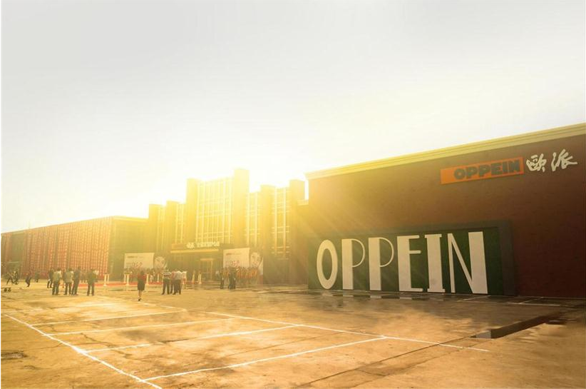
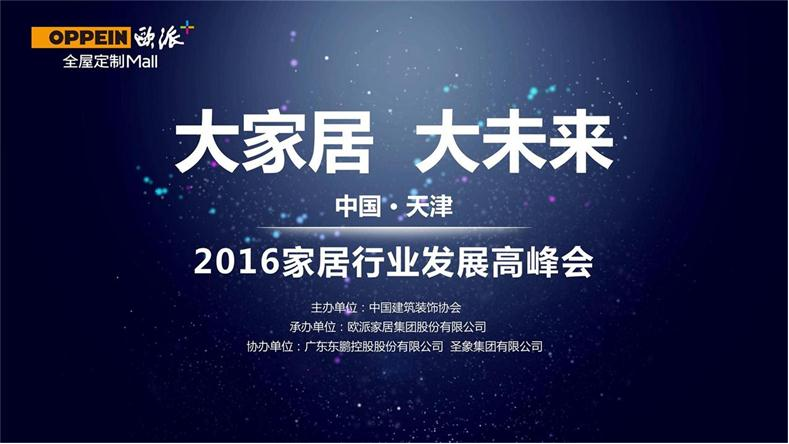
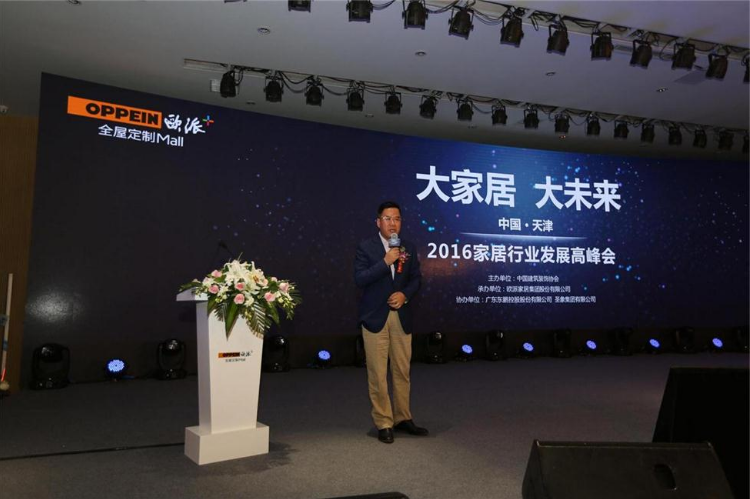
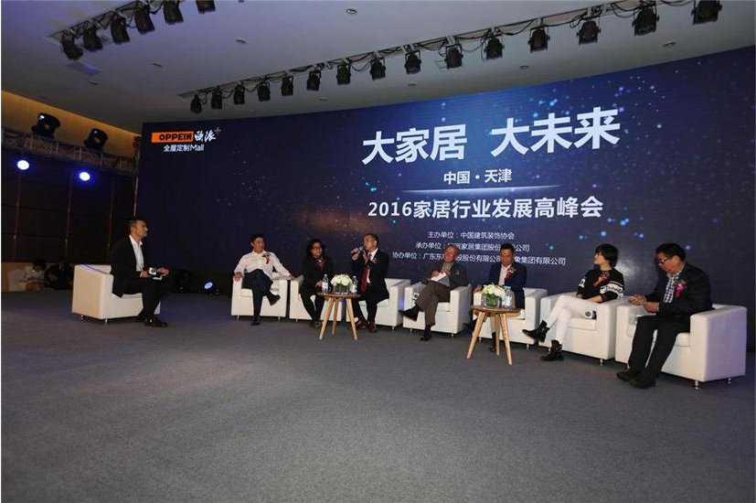
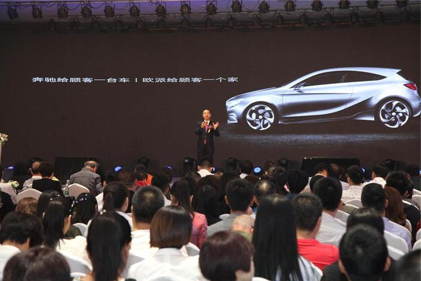

随着中国经济经过30多年的高速增长后开始减速换挡，家居行业也告别了传统的粗放式增长模式。2015年家居行业遭遇寒冬，竞争形势也愈来愈严峻，行业的洗牌以及企业之间的优胜劣汰使得许多企业频现倒闭现象。但另一方面，大企业的业绩依然保持增长。这种行业发展不均延续到了今年。

这种行业发展不均的现象并不离奇，而是应了李克强总理早在2015年的冬季达沃斯论坛上的预言——“中国经济不会因放缓而失速，反而会跑得更稳健有力。” 经济学家马光远在2016年10月6日欧派天津“大家居 ﹒大未来”峰会上也提出：看全球经济的风口，最好的风口仍然在中国。从中国经济本质上来讲，它的动力，它的空间，它的想象力，仍然是全球最好的。无论是在商业模式上还是产业变局上的大尝试，中国属于著名的经济实验室，大型的、新兴的产业，总能在中国找到发扬光大最后变成大树的机会。

增速减缓，消费碎片化，集中度减弱及消费需求个性化的体现。常态化的经济发展趋势和现象正在形成。在过去企业认为好的推送消费者，消费者被动接受。新常态下市场则是消费者需求的，企业研发满足和提供服务。颠覆原有的自闭式供求关系模式。将粗放式的研发逼迫向消费式转变。
一言蔽之，家居企业如何在经济新常态下寻找突破之道？

新常态下欧派大家居的破与立
经济新常态是挑战，更是机遇。中国家居行业面临着探索和超越的常态突围。而这一种考验是一种智慧、实力、坚持的综合比拼，是显现家居企业掌门人真正水平的关键时刻。
欧派大家居，在鞭策自身改革创新上，很具借鉴性。
欧派在2015年的销售依然强劲，不仅橱柜在15年间一骑绝尘，而且连大衣柜也迎头赶上，紧追行业领头羊。但欧派的野心不止于此。
2005年，开始将产品范围由橱柜拓展至整体衣柜领域， 2010年，再次大范围拓展至厨电、卫浴，并进军木门领域。2014年，欧派选择在成立20周年之时正式公布大家居策略。这一年的11月9日，习总书记在亚太经合组织工商领导人峰会开幕式上的演讲上，正式明确指出了中国经济新常态的几个主要特点。回顾以往，欧派以“春江水暖鸭先知”的行业敏感和力度空前的革新能力，走出了与众不同的大家居之路，既顺应了经济新常态，也在大家居成为定制行业大势所趋的时候脱颖而出。
如果说开一间大家居只是试水之作，那么接二连三，从哈尔滨、广州、北京、西安、西宁、盘锦、梅州、富阳再到即将在国庆揭开面纱的拥有2万平方米面积、号称“全国体量最大的大家居超级航母”的天津店。可见，欧派并非浅尝则止。

距离6月中旬的哈尔滨欧派全屋定制Mall开业仅仅过去三个多月，欧派就再次以大手笔和大魄力向世人展示了剑指大家居市场的高度执行力和自信心。
步履不停，诠释欧派大家居的雄心再恰当不过。
欧派从过去意义上的大家居材料供应商角色，变身成为了一体化、一站式全屋定制方案提供者和解决者，由此转型升级成为了更具市场价值的专业服务商。当其他家居品牌对“大家居”的理解和实践，还停留在为消费者生产全屋家具定制产品的时候，欧派大家居已经实现了对全屋家居的定制，为消费者带来了前所未有的优质配套服务和便利消费体验。
显然，欧派大家居的破就在于打破品类壁垒，立就在于整合家装链条，赋予全屋定制新的形态和态势，欧派自身也从单品类产品提供者向服务整合提供者迈进。
不破不立：欧派大家居的量变与质变
10月6日，中国建筑装饰协会会长李秉仁在 “大家居﹒大未来”中国﹒天津2016年家居行业发展高峰会上也明确表示，家居企业的研发及思维必须要从过去传统研发思维中转变出来，向消费式的研发需求及服务需求上转变，适应和接轨新常态下的市场个性化消费需求。

纵观欧派家居这些年的破与立，可以从“战略布局、产业升级和内功修炼”上可见一斑。无不是在以市场和需求为导向，脚踏实地，深刻展示欧派量变到质变的过程。
前瞻性的战略布局，优化和整合资源的思维来推动发展
2013年媒体宣告“异业联盟时代来临了”，但早在2009年欧派已发起成立冠军家居联盟，顺利走出金融危机阴影，联盟区域平均销量增加50%。
2008年，金融海啸席卷全球，世界经济遭受重创。
2009年，国际经济环境仍然严峻，对我国经济形成较大的调整压力。
而在众多行业中，泛家居建材业是这场金融海啸中，受影响最深的房地产行业的下游配套产业，2009年面临的压力尤为巨大。
谈及成立冠军联盟的初衷时，欧派集团董事长姚良松表示，是基于“一站式的消费需求开始受年轻消费群体的青睐”的思考。鉴于这种现状及趋势，不同品类与其各自奋战，不如抱团取暖。资源共享，联盟品牌之间将会进行广泛的合作，无论对于行业内，还是对于消费者都有着深远的意义。
最终，在欧派的号召下，集合大自然地板、东鹏陶瓷、雷士照明、美的中央空调、红苹果家具等六大品牌，组建联盟，携手应对危机。
欧派在战略布局上的前瞻性，有目共睹。
2015年提出“三马一车”战略，三马即大家居、信息化、欧铂丽，一车即终端的代理。姚董表示，这些都将是欧派未来的增长点。
同年的5月15日，欧派更是玩起了跨界。携手乐视启动“超级爱+”计划。其中“+”就是欧派所提出的大家居和信息化，乐视大屏购物所打造的客厅购物场景，为消费者提供更简单、透明、便捷的消费体验，为欧派的“互联网+”和C2B+O2O新营销模式提供更多的线上互动体验平台，实现资源的优化整合，加速推动集智能、物联为一体的未来家居成为现实的步伐。